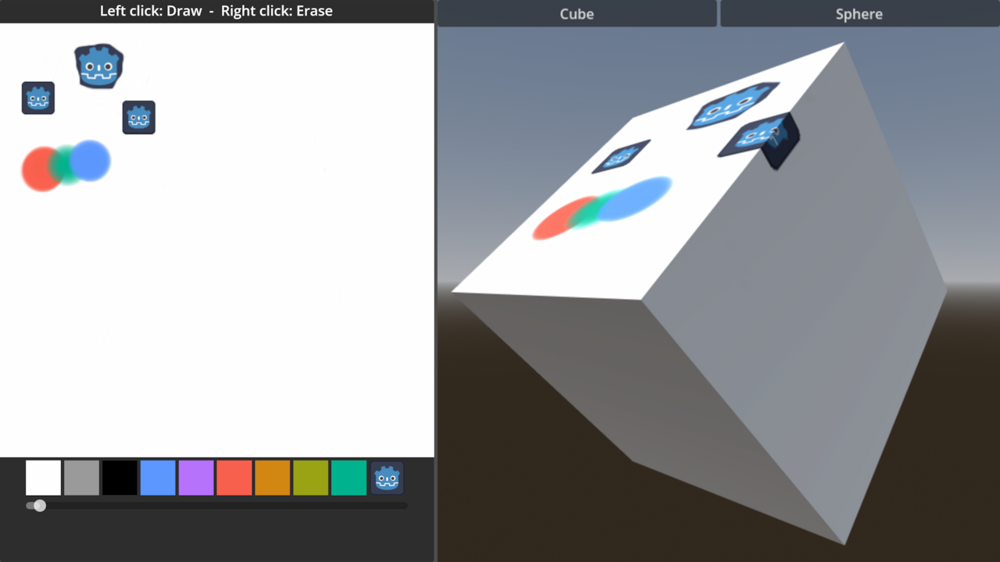

Godot's Drawable Textures demo, retitled. A tech demo: a paint toy on one shared texture, not a game.
OBSERVED INFERRED MISSING
No gate signed. No human review. → GDD.md

Upstream screenshot (godot/README.md:17). Design art, not a Walker capture. Paint and erase pixels are unverified.
OBSERVED The canvas and the mesh material share one DrawableTexture2D (main.gd:34-35). The cube and sphere share one material (main.tscn:176,182).
OBSERVED The eraser is a gradient in the background colour. INFERRED It is correct only on a white canvas. Don't narrate it as restoring transparency (R-01, Q-04).
Q-01 API demo or creative toy?
Q-03 Adopt PX-01?
Q-04 True erase?
Q-02, Q-05 in decisions.md
Ghost Center, as expected. The shot that sells it: a stroke in 2D landing on the cube in the same frame. Everything else is a menu.